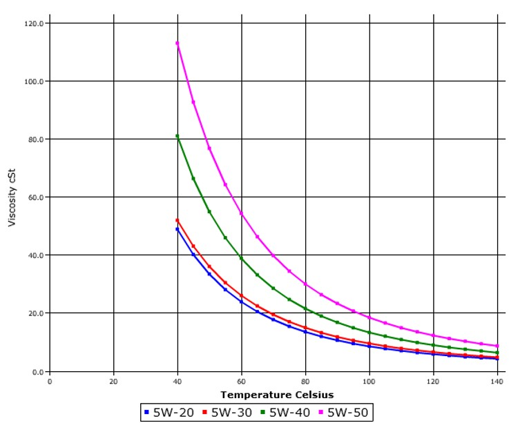
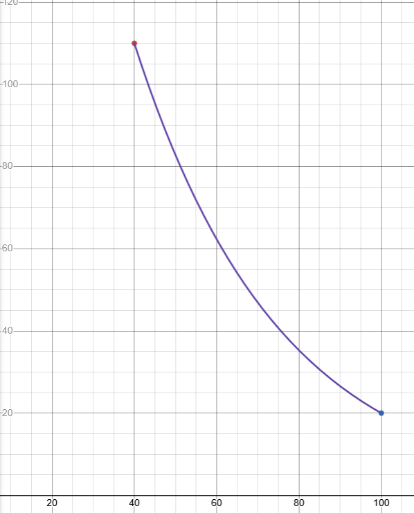
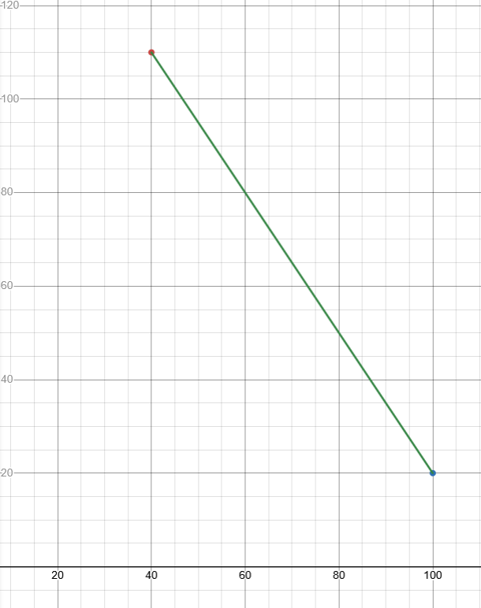

I lied about the certificate. I'm here to complain more about the SAE standards
Oils are not linear with respect to temperature: therefore, two points are wholly insufficient to define an oil

An oil that passes certification could have any goddamn curve it wanted as long as it hit the points at negative whatever for the W value and 100C. SAE 50 could look like this:
or this:
or god forbid this: